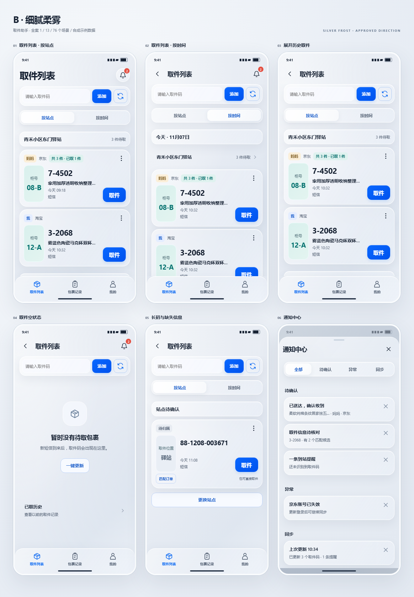
01 / 13
取件列表 · 取件列表 · 取件列表 · 取件列表 · 取件列表 · 通知中心
14 个现有页面 · 76 个场景 · 13 张总览。点击图片查看原尺寸。每屏可滚动内容及操作状态请打开交互稿。
打开完整交互源稿 →
取件列表 · 取件列表 · 取件列表 · 取件列表 · 取件列表 · 通知中心
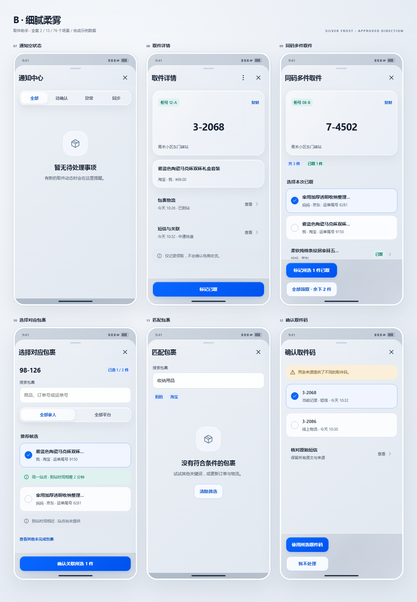
通知中心 · 取件详情 · 同码多件取件 · 选择对应包裹 · 匹配包裹 · 确认取件码
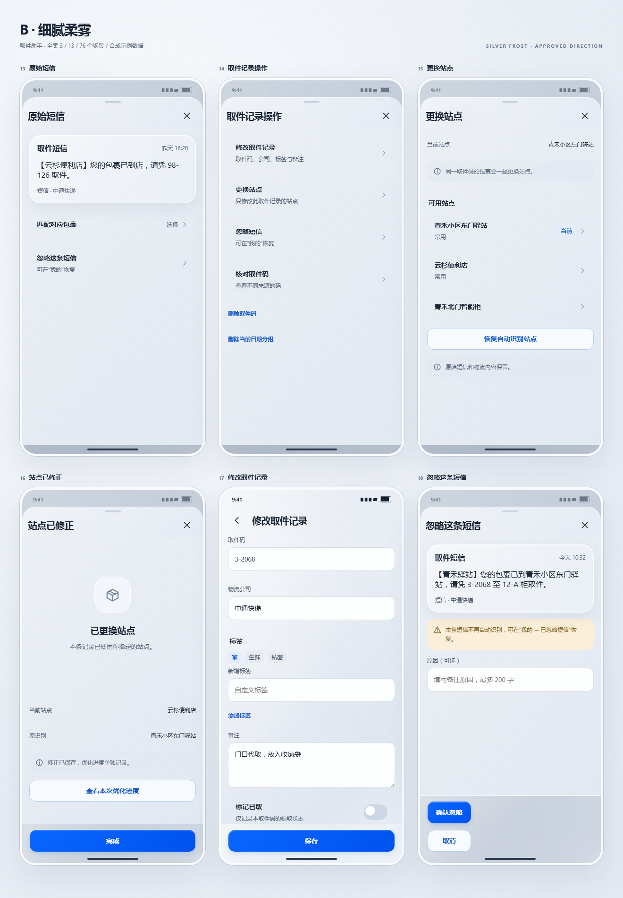
原始短信 · 取件记录操作 · 更换站点 · 站点已修正 · 修改取件记录 · 忽略这条短信
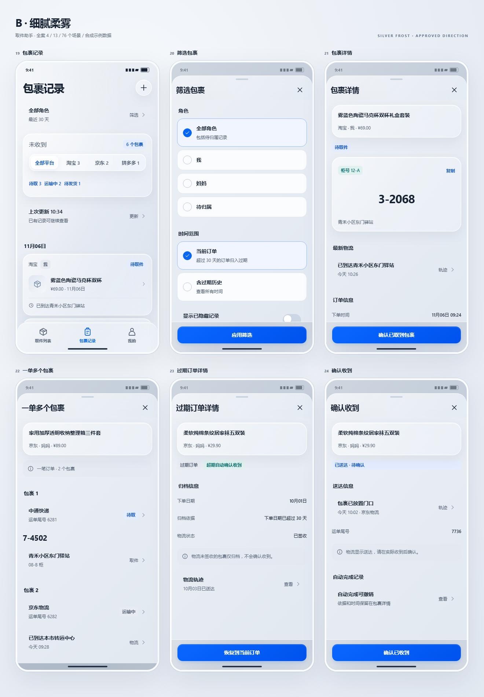
包裹记录 · 筛选包裹 · 包裹详情 · 一单多个包裹 · 过期订单详情 · 确认收到
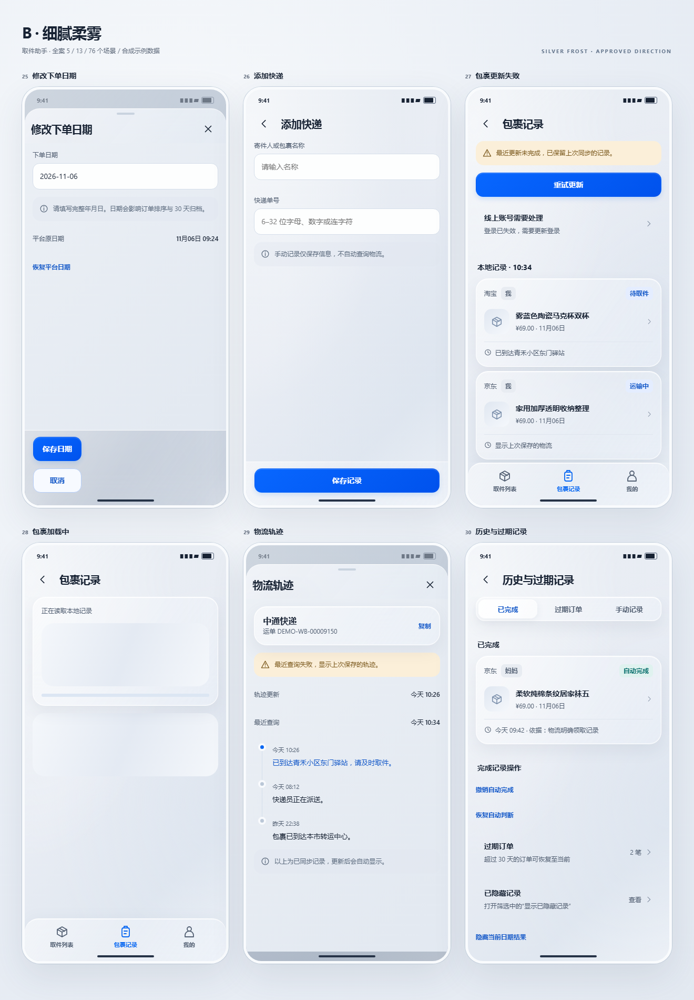
修改下单日期 · 添加快递 · 包裹记录 · 包裹记录 · 物流轨迹 · 历史与过期记录
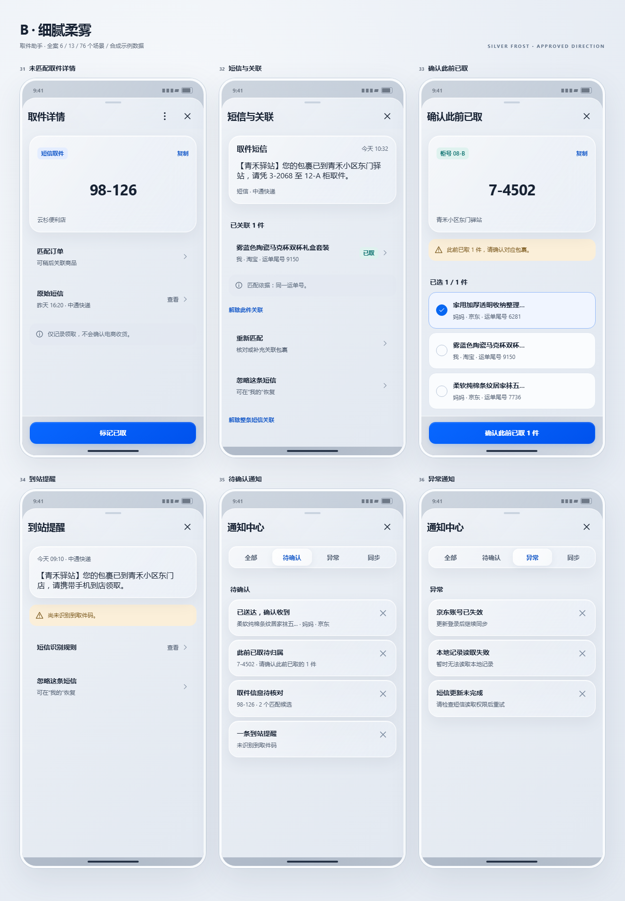
取件详情 · 短信与关联 · 确认此前已取 · 到站提醒 · 通知中心 · 通知中心
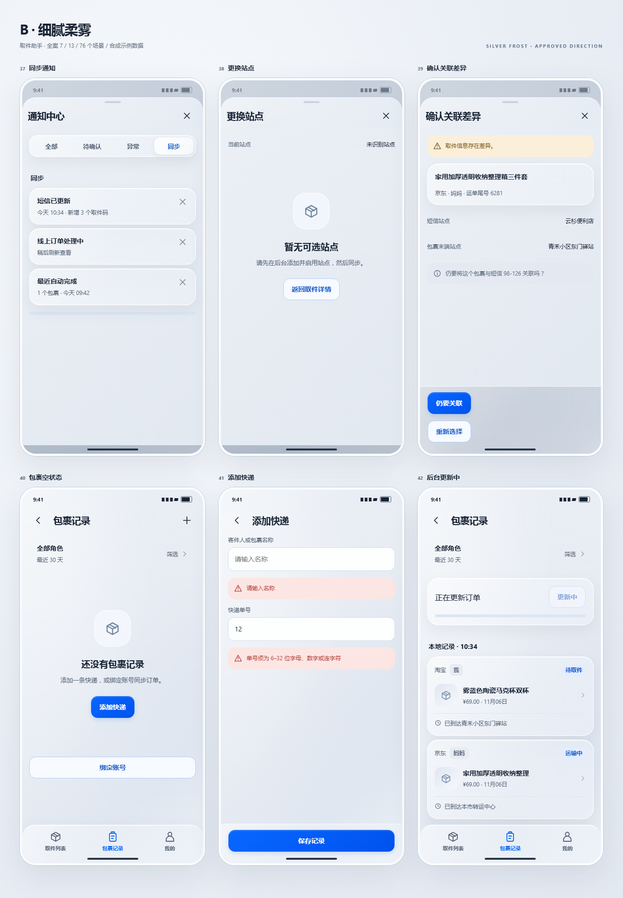
通知中心 · 更换站点 · 确认关联差异 · 包裹记录 · 添加快递 · 包裹记录
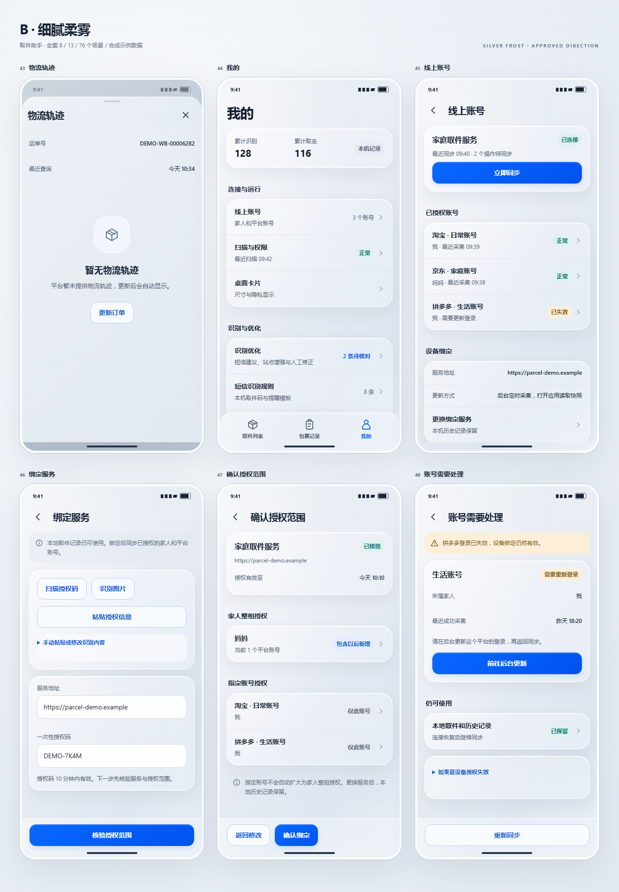
物流轨迹 · 我的 · 线上账号 · 绑定服务 · 确认授权范围 · 账号需要处理
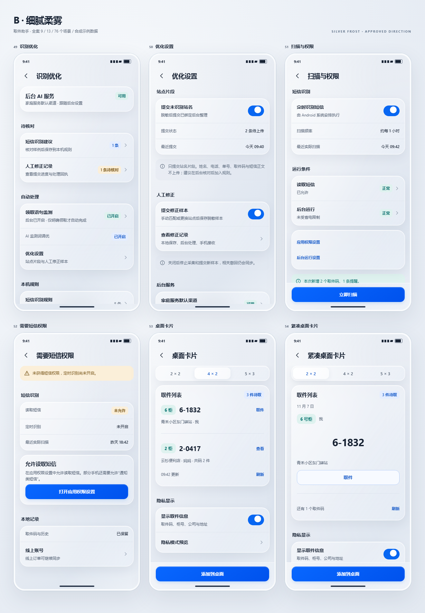
识别优化 · 优化设置 · 扫描与权限 · 需要短信权限 · 桌面卡片 · 紧凑桌面卡片
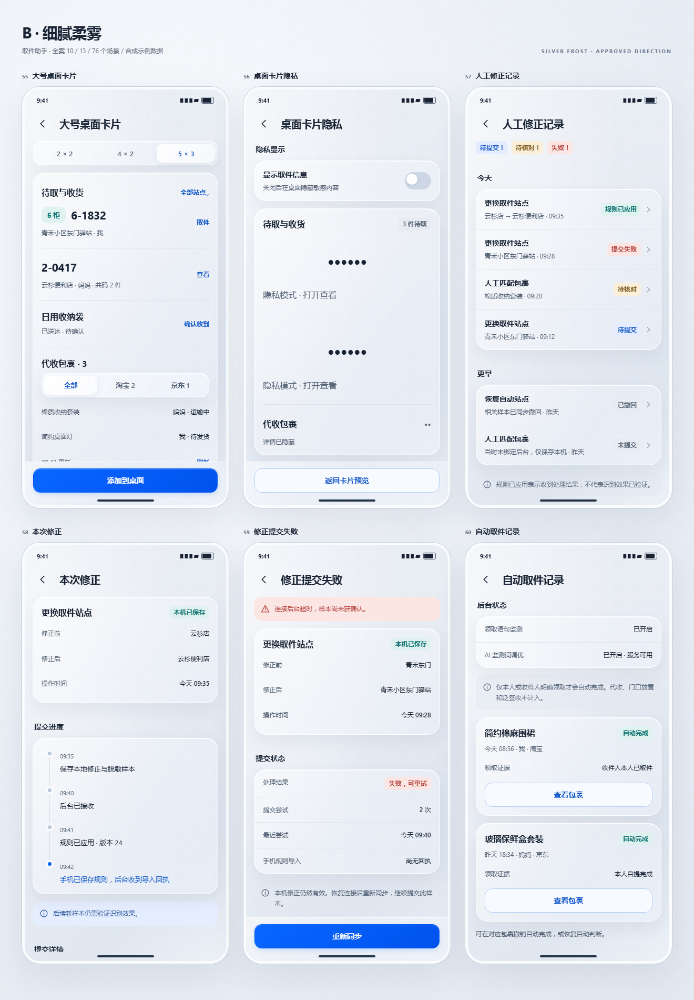
大号桌面卡片 · 桌面卡片隐私 · 人工修正记录 · 本次修正 · 修正提交失败 · 自动取件记录
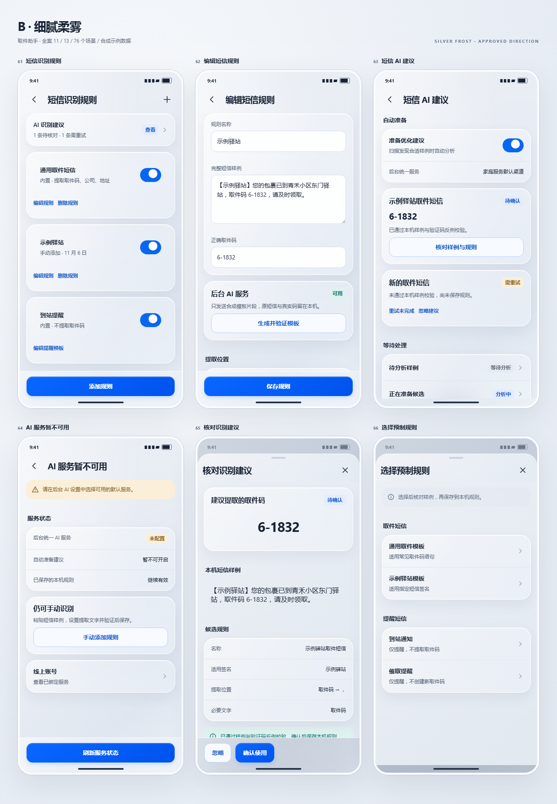
短信识别规则 · 编辑短信规则 · 短信 AI 建议 · AI 服务暂不可用 · 核对识别建议 · 选择预制规则
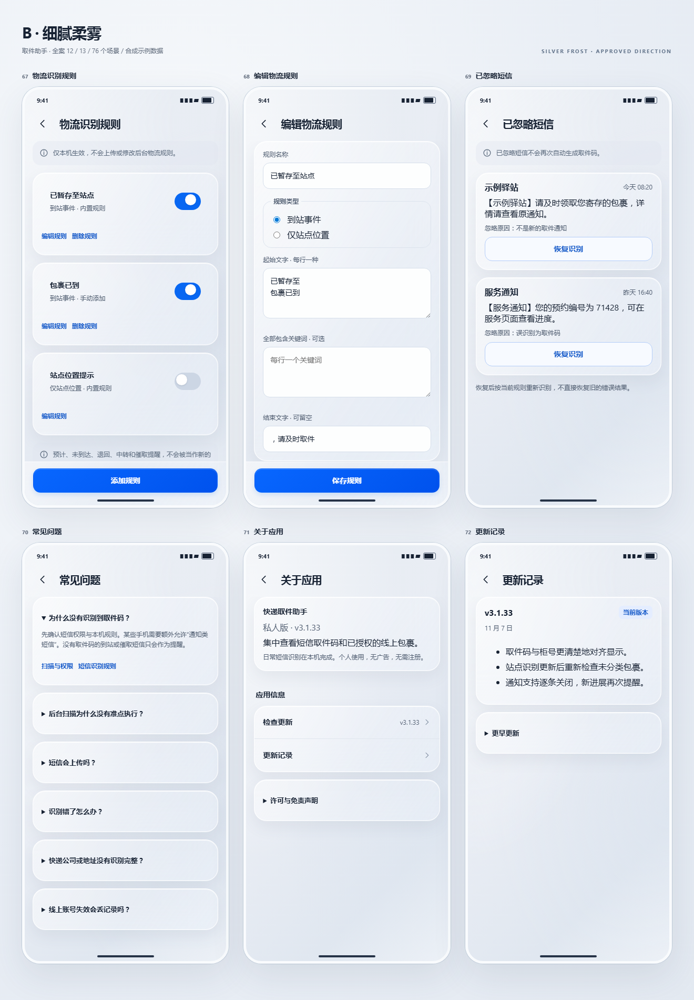
物流识别规则 · 编辑物流规则 · 已忽略短信 · 常见问题 · 关于应用 · 更新记录
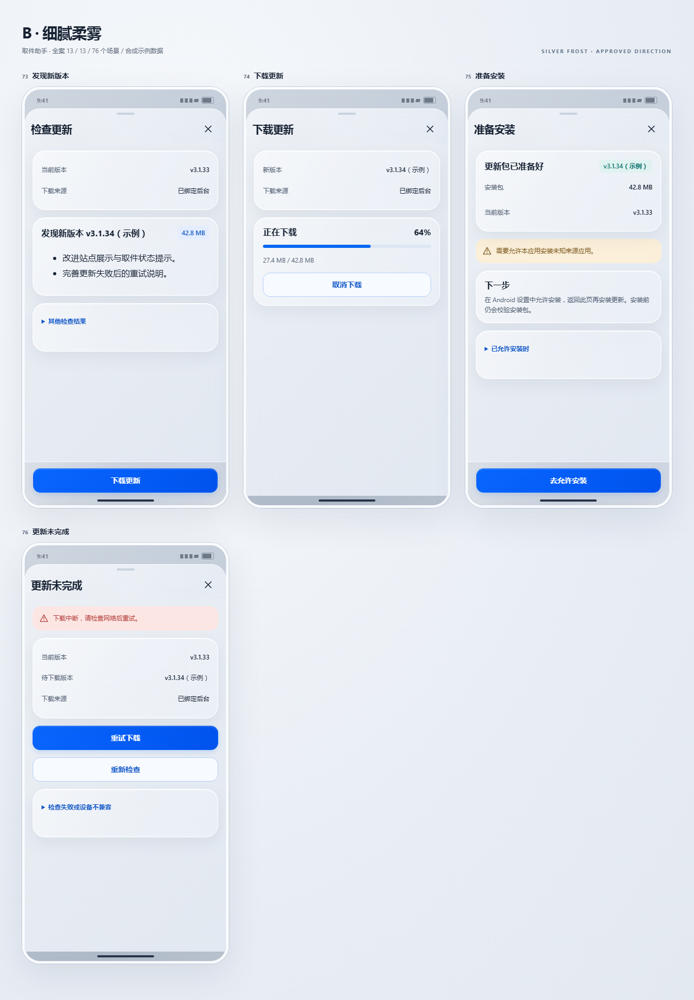
检查更新 · 下载更新 · 准备安装 · 更新未完成